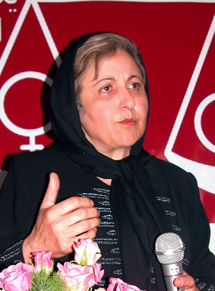

پذيرش > اخبار > شیرین عبادی چه می گوید؟/خدیجه مقدم


 شیرین عبادی چه می گوید؟/خدیجه مقدم شیرین عبادی چه می گوید؟/خدیجه مقدم
16 دی 1387 - - نسخه قابل چاپ
سخنی با فرزندان بسیجی ام
تغییر برای برابری؛ خدیجه مقدم
وقتی شنیدم و خواندم که در ترمینال شماره یک فرودگاه مهرآباد ساعت ها انتظار کشیدید تا به غزه بروید و در کنار خواهران و برادران فلسطینی، از انسانیت و عدالت دفاع کنید، اشکم سرازیر شد و به یاد جوانی خودم افتادم که من هم آرزو داشتم برای نجات سرزمین های اشغالی فلسطین در کنار آنان باشم و با دشمنان بشریت بجنگم و امروز چقدر از جنگ بیزارم هر چند می دانم گاهی برای رسیدن به صلح هم باید جنگید و دشمن را به عقب راند ولی چگونه ؟
امر به معروف و نهی از منکر یا به زبانی دیگرارتقاء فرهنگ عمومی وظیفه هر شهروند متعهد و مسئولی است به همین منظور می خواهم بگویم :
پسران عزیزم در کنار احساسات، به عقل و منطق تان هم رجوع کنید . چرا از نیروی عظیم و احساسات پاک شما در توسعه کشور استفاده نمی شود .
فقز ، اعتیاد ، بیکاری ، تبعیض و فساد را در جامعه نمی بینید ؟ می دانم که می بینید ، خوب هم می بینید و رنج زیادی می برید که خود قربانی این جامعه شده اید .
یادتان هست ! همین اواخر وقتی خبرگزاری جمهموری اسلامی ایران – مطلبی کذب در مورد خانم عبادی نوشته بود، در دفتر کانون مدافعان حقوق بشر که اینک به نا حق پلمپ شده با هم گفتگو می کردیم ، من برای حمایت از خانم عبادی رفته بودم و شما برای انتقاد از وی . چقدر خوشحال بودم که اصل گفتگو را پذیرفته اید و شما را با بسیجی های سال ها ی پیش که با زنجیر وقمه در یک چهارشنبه سوری به ما و همسایگان مان حمله کردند و و از وحشتی که ایجاد کزده بودند پسرهفت ساله من تا مدت ها دچار لکنت زبان شد ، مقایسه می کردم و خوشحال بودم که بسیج چه متحول شده است .
اشتیاقم را پنهان نکردم و با هم مدتی گفتگو کردیم . شما گفتید از بدحجابی رنج می برید و من گفتم که ناموس مان وقتی به باد می رود که برخی از دختران و پسران ما برای بقای حیات خود و اغلب خانواده هایشان چه به صورت رسمی و چه به صورت غیر رسمی تن فروشی می کنند و ازشما مادرانه تقاضا کردم که نیرویتان را برای مبارزه با فقر مصرف کنید که سرچشمه همه آسیب های اجتماعی است شما با نجابت سر به زیر انداختید و رفتید .
واکنون 12 دیماه ، شما با چه منطقی به دفتر و منزل شیرین عبادی حمله کردید و شعارهای زشت و ناروا نثار ایشان کردید ؟ می دانید چه کسانی شما را از مسیر گفتگوی مسالمت آمیز منحرف می کنند ؟ همان هایی که به شما وعده دادند از فرودگاه مهر آباد به غزه خواهید رفت . عزیزان من از ترمینال شماره یک مهرآباد به غزه راهی نیست !
خانم شیرین عبادی چه می گوید ؟
وقتی شما خیلی کوچک یا هنوز به دنیا نیامده بودید ، یعنی حدود 20 سال پیش خانم عبادی به دفاع از آسیب پذیرترین قشر اجتماع یعنی کودکان پرداخت و نتیجه تلاش هایش در کتاب " حقوق کودک " مورد استفاده مجلس شورای اسلامی – دانشگاه و مردم قرار گرفت و اکنون به چاپ هفتم رسیده و به زبان های دیگر نیز ترجمه شده است . این کتاب به ما می آموزد که کودکان طبق قانون صغیرانی هستند که حقوقی دارند و ازبرخی حقوق هم محرومند . این صغیران نمی توانند از حقوق داشته خود دفاع کنند و حقوق واقعی خود را متناسب با جامعه امروز خواستار شوند و ما مسئولیم که به آنان و توسعه جامعه کمک کنیم .
تخصص و روحیه ی عدالت خواهانه و تلاش مستمر و خستگی نا پذیر خانم شیرین عبادی ، موجب تصویب برخی از قوانین مرتبط با کودکان در ایران شده و آگاهی های عمومی را افزایش داده است .
چرا ایشان از حقوق زنان حمایت می کنند ؟ فقط یک مثال از تاثیر قوانین تبعیض آمیزبر زندگی زنان محروم می آورم تا عمق فاجعه را متوجه شوید . 12 دیماه 1387 که شما تابلوی دفتر وکالت حقوقدان و وکیل مدافع فعالان حقوق برابر را شکستید اولین سالگرد اعدام راحله زمانی بود، زنی از روستای ایدلی شهر سراب که در 14 سالگی به اجباربه مردی متمول از روستایشان شوهر دادند. سال ها جثه کوچک او مورد آزار و اذیت و شکنجه و تجاوزهای غیر اخلاقی همسر معتادش قرار می گرفت و روح اش با خیانت همسردر مقابل چشمان و نگاه هراسان و دردمندش رنج و زجر مداوم بود. یکشب تحت تاثیر داروهای روان گردانی که شوهر برای افزایش آستانه تحمل خلاف هایش به او می داد، با همان میله ای که هر شب کتک می خورد شوهرش را کشت . راحله بارها به پدرش التماس کرده بود که کمک کند تا او طلاق بگیرد ولی نه قانون و نه هیچ احدی از او حمایت نکرد تا بتواند با دو فرزند خردسالش به زندگی ادامه دهد . خانم عبادی برای نجات جان راحله ها تلاش کرد.
وقتی دنیا به خاطر دریافت جایزه صلح نوبل برای شیرین عبادی هورا می کشید او از زندان های گوانتانامو سخن گفت، از افغانستان، از عراق، از فلسطین و با شجاعت و صلح طلبانه از مردم محروم جهان حمایت کرد و صلحی سخن گفت که بدون حقوق بشر معنا و مفهومی ندارد .
وقتی خطر حمله نظامی به کشور عزیزمان به صورتی جدی در دستور کار آمریکا و متحدانش قرار گرفت پیشنهاد ایجاد " شورای ملی صلح " از طرف خانم عبادی مطرح و خوشبختانه این شورا تشکیل شد و هم اکنون یکی از پایگاه های مهم صلح خواهی مردم ایران با تنوع بینش و تفکر های سیاسی مختلف است .
جوانان دلسوز و شجاع !
هیچ می دانید سال گذشته وقتی ما ، تعدادی از مادران طرفدار صلح تجمعی در مقابل سازمان ملل برای اعتراض به محاصره غزه داشتیم و می خواستیم حمایت خود را از زنان و کودکان بی دفاع غزه اعلام کنیم دو برابر تعداد ما پلیس روانه محل کردند و مانع ازبرگزاری تجمع مسالمت آمیز ما شدند ؟ و شما هر روز تجمع ، راهپیمایی ، اشغال باغ سفارت و خیلی حرکت های دیگر را به راحتی انجام می دهید و نه دستگیری ،نه باز داشت و نه محاکمه ای در کار است آیا این عجیب نیست ؟ مراقب باشید آلت دست چپ و راست نشوید .
کمی فکر کنید ! چشم هایتان را باز و گوش هایتان را تیز کنید و ببینید خانم شیرین عبادی چه می گوید .
ارسال به
بالاترین
،
توییتر
،
فریندفید
،
فیسبوک
در همين بخش :
 پروین ذبیحی برنده جایزه حقوق بشری سازمان غيردولتى اتريشى سودويند شد پروین ذبیحی برنده جایزه حقوق بشری سازمان غيردولتى اتريشى سودويند شد
پخش کارت پستال و بروشور در روز جهانی زن در تهران
تمدید زمان برای امضای بیانیهی جمعی از فعالان زن به مناسبت هشت مارس
مجوزی که در نطفه خفه شد
بیش از 2000 امضا در اعتراض به تبعیض های آموزشی به مجلس تحویل داده شد
ديگر بخش ها :
طرح یک میلیون امضا
|
مقالات
|
سایت نوشته ها
|
اخبار
|
گزارش كمپين
|
گفت و گو
|
علیه سکوت
|
كوچه به كوچه
|
نامه های شما
|
گزارش ویژه
|
گفتگو با اعضا
|
ویژه سالگرد کمپین
|
تصویر برابری
|
دل آرام علی
|
تریبون
|
مقالات
|
تاریخ شفاهی
|
خارج از چارچوب
|
کتابخانه
|
درباره کمپین
|
کمپین در شهرها
|
کمپین در بند
|
صدای تغییر
|
ویژه 22 خرداد
|
لایحه حمایت از خانواده
|
گالری
|
عشا مومنی
|
امیر یعقوبعلی
|
خدیجه مقدم
|
راحله عسگری زاده و نسیم خسروی
|
پروین اردلان،جلوه جواهری، مریم حسین خواه، ناهید کشاورز
|
زینب پیغمبرزاده
|
سعیده امین، سارا ایمانیان، محبوبه حسین زاده، ناهید کشاورز و همایون نامی
|
احترام شادفر
|
نسیم سرابندی زاده،فاطمه دهدشتی
|
وبلاگ مهمان
|
پرونده خرم آباد
|
دستگیری ها
|
مریم مالک
|
پرستو اللهیاری
|
مهرنوش اعتمادی
|
سمیه رشیدی
|
Other Languages
|
همراهان
|
«فراخوان کمپین ده روز با بهاره هدایت»
| English
|